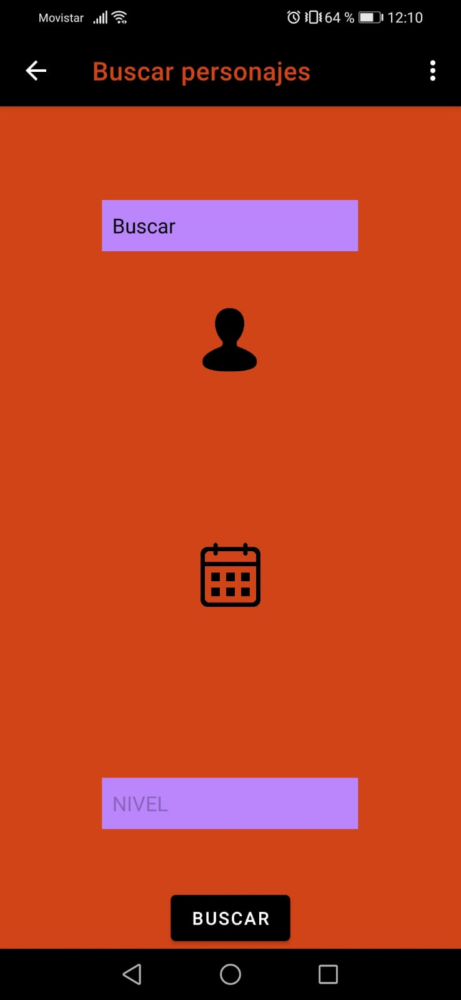

Ayuda Menú Busqueda

En este Menú podemos buscar personajes por varios campos. Nos devuelve a la lista con los personajes encontrados
El primer spinner nos habilita la opción elegida
La fehca se puedde introducir manualmente o mediante el icono del calendario. (dd/mm/yyy Ó dd-mm-yyyy)